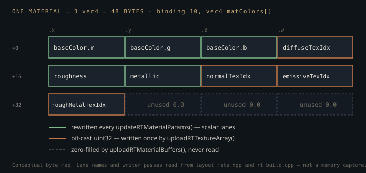

Monograph · Tree · ← Module hub · GPU material pack
materials
GPU material pack
3×vec4 matColors, texture bit-cast indices.
A struct that exists on only one side
There is no material struct on the GPU. Binding 10 of the path-tracer descriptor set is a flat array of `vec4` and nothing else:
layout(set = 0, binding = 10) readonly buffer MatColorBuffer { vec4 matColors[]; } matColorBuf;shaders/rt/pt_closesthit.rchit:32A material is therefore a convention rather than a type: three consecutive vec4s, twelve float lanes, and a meaning per lane that every producer and consumer has to agree on independently. The closest-hit shader reassembles the row by hand, one indexed load per slot, before it knows what any lane holds:
vec4 matParams2 = matColorBuf.matColors[matID * 3u + 2u]; // (roughMetalTexIdx, unused, unused, unused)shaders/rt/pt_closesthit.rchit:99`layout_meta.hpp` is where that convention is written down. The stride there is derived from the slot count — `kMaterialBytes = kMaterialVec4s * sizeof(glm::vec4)` — and the derived value is then pinned against a literal:
static_assert(MaterialGpuPack::kBytes == 48, "material pack is 3 * 16 bytes");ohao/gpu/layout_meta.hpp:56Integers that have to travel as floats
Four of the twelve lanes hold bindless texture indices — uint32 values in an array whose element type is float. `packIdx` folds a signed layer index and the "no texture" case onto one uint32:
uint32_t u = (idx >= 0) ? static_cast<uint32_t>(idx) : 0xFFFFFFFFu;ohao/gpu/vulkan/rt_build.cpp:801and then reinterprets the bits instead of converting the value:
float f; memcpy(&f, &u, sizeof(float)); return f;ohao/gpu/vulkan/rt_build.cpp:802The closest-hit shader reverses that with `floatBitsToUint` before testing against the missing-texture sentinel:
if (diffuseTexIdx != 0xFFFFFFFFu) {shaders/rt/pt_closesthit.rchit:109A value conversion would not have worked: binary32 represents integers exactly only up to $2^{24}$, and 0xFFFFFFFF has no exact float representation at all. Reinterpretation is exact, but it parks every index in a numerically hostile region. Let $i$ be the uint32 index and $\mathrm{bits}^{-1}(i)$ the binary32 number whose bit pattern equals $i$. For $0 < i < 2^{23}$ the exponent field is all zeros, so the result is subnormal:
Bindless indices are small, so *every nonzero texture index in the pack is a subnormal float* (index 3 reads as $4.2 \times 10^{-45}$); index 0 reinterprets as $+0.0$, and the sentinel is a NaN. All three survive only because nothing does arithmetic on those lanes — they are memcpy'd in, loaded, bit-cast out. A pass that multiplied, interpolated, or ran under flush-to-zero there would not crash; it would silently repoint the scene's textures.
Three passes fill one buffer, and device memory is the only copy
The pack is never assembled in one place. `uploadRTMaterialBuffers()` builds the rows first, all four index lanes set to the sentinel, from a function-local vector destroyed at the end of the call. `uploadRTTextureArray()` runs second — it cannot run earlier, because bindless layer indices do not exist until the texture array is built — maps the same allocation and patches only the index lanes:
matColors[i * 3 + 2].x = packIdx(i < globalRoughMetalTexLayer.size() ? globalRoughMetalTexLayer[i] : -1); // roughMetalTexIdxohao/gpu/vulkan/rt_build.cpp:809That order is fixed by the caller:
uploadRTMaterialBuffers();ohao/gpu/vulkan/scene_upload.cpp:379No assertion enforces it. The patch loop's only precondition is that the buffer exists and the layer table is non-empty, so an inverted order would skip every real index in silence rather than crash:
if (m_rtMatColorBuffer && m_rtMatColorMemory && !globalMatTexLayer.empty()) {ohao/gpu/vulkan/rt_build.cpp:793The third visit is the inverse-rendering inner loop. `updateRTMaterialParams()` is called from inside `RenderSession::render()`, and one objective evaluation renders every fit view — three by default (`numViews{3}`, clamped to eight on the command line) — so the buffer is re-mapped once per view per loss sample, not once per evaluation:
const bool matsOk = renderer.updateRTMaterialParams();ohao/inverse/render_session.hpp@223ff7f:50for (int v = 0; v < nViews; ++v) {ohao/inverse/staged_fit.hpp@223ff7f:224It pushes new albedo, roughness and metallic without rebuilding acceleration structures. Because the texture indices live in the same rows and exist nowhere on the CPU, that pass has to write component by component:
matColors[matIdx * 3 + 1].x = mc2.w; // roughness packed in .w of materialColorsohao/gpu/vulkan/rt_build.cpp:356Replacing those scalar stores with whole-`vec4` assignments — the obvious tidy-up — would zero `.z` and `.w`, and bit pattern 0 is not the sentinel: it is texture index 0. Every material would start sampling whichever image landed on bindless layer 0 — wrong textures, not black.
The three passes also disagree about which actors count. `uploadRTMaterialBuffers()` and `uploadRTTextureArray()` both take every actor that has a model; the solver pass additionally skips the invisible ones:
if (!mc || !mc->getModel() || !mc->isVisible()) continue;ohao/gpu/vulkan/rt_build.cpp:333`matIdx` is a running counter over whatever survives that filter, so one hidden actor slides every later material short of the row the build pass gave it. Nothing goes out of bounds — the loop stops at `m_rtMatCount` — and the solver writes its albedo, roughness and metallic into the wrong materials.

Interleaving the indices into the float rows keeps a whole material inside one binding. The alternative — a parallel SSBO of uints beside the colours — needs no bit-casting and no NaN/subnormal discipline, but costs a second descriptor binding and a second buffer to keep in step across all three upload passes, including the solver loop that re-maps the pack once per rendered view. It does not save a fetch: the closest-hit already issues three separate loads from binding 10 before it decodes a single index. OHAO pays for the one binding with the standing rule that four of the twelve lanes are opaque bits.
The constants that are load-bearing, and the ones that are decoration
`MaterialGpuPack` offers `byteOffset()` and `vec4Count()` so nobody has to write the stride by hand, and a canonical `kNoTexture`:
static constexpr uint32_t kNoTexture = 0xFFFFFFFFu;ohao/gpu/layout_meta.hpp:39Grep says otherwise. `byteOffset` and `vec4Count` are called only by their own self-asserts and by `tests/engine/engine_tests.cpp`; `kNoTexture` is referenced nowhere outside its own header. `rt_build.cpp` — the only file that writes binding 10 — spells `0xFFFFFFFFu` out three times instead: twice while building the sentinel rows, once inside `packIdx`. The bit-cast idiom is copied further, into `scene_upload.cpp` and `gbuffer_pass.cpp`, but those two pack indices into the forward and deferred per-draw push constants, never into this buffer, and they take their sentinel from `UINT32_MAX`. Every consumer hardcodes the stride 3. The drift is already in the tree:
// allMatColors has 2 vec4s per material, so divide by 2 for material countohao/gpu/vulkan/rt_build.cpp:208That comment survives from the two-vec4 era and sits directly above a division by 3. The static asserts are still worth having, but they are a lock, not a derivation: editing `kMaterialVec4s` breaks the build instead of updating the strides, because the strides are in the .cpp files.
A header that only looks like padding
The light SSBO plays the same game with a sharper move. `GPULight` is five vec4s, 80 bytes, and the raygen shaders declare binding 11 as `{ uint lightCount; GPULight lights[]; }`. Under std430 a struct of vec4s aligns to 16, so the array cannot begin at offset 4 — it begins at 16, and the writer hardcodes exactly that:
VkDeviceSize lightDataOffset = 16; // align GPULight array to 16 bytesohao/gpu/vulkan/light_upload.cpp:257The 12 bytes between the count and the first light look like alignment slack. They are not. `pt_miss.rmiss` declares the *same binding* as a different block — four scalars, no light array — and reads the environment-map index and HDRI intensity out of that gap:
uint envMapTexIdx; // bindless index of HDR env map (0xFFFFFFFF = none)shaders/rt/pt_miss.rmiss:28One buffer, two structurally different views chosen per shader stage. The header is initialised by a 16-byte memset of 0xFF so that `envMapTexIdx` defaults to the same sentinel the material pack uses:
memset(mapped, 0xFF, 16); // init header to 0xFFFFFFFF (no env map by default)ohao/gpu/vulkan/light_upload.cpp:276and because that memset runs on *every* light upload, the environment index has to be re-stamped afterwards or the miss shader loses the HDRI — a coupling between the light path and the environment path that no struct definition hints at.
What the layout assertion cannot see
Both packs are guarded by one macro:
OHAO_ASSERT_GPU_LAYOUT(GPULight, layout::kGPULightBytes);ohao/render/rt/gpu_light.hpp:17It expands to two static asserts — that the type satisfies `GpuPod` (trivially copyable, standard layout) and that `sizeof` equals the stated number. Both are facts about C++. Nothing in the tree reflects the SPIR-V, and the GLSL `GPULight` is hand-copied into `pt_raygen.rgen`, `pt_raygen_offline.rgen` and `pt_raygen_realtime.rgen` with no shared include. The assertion catches a C++ edit and is blind to a shader edit.
The same header carries a constant that reads like a hard limit and is not one:
static constexpr uint32_t MAX_GPU_LIGHTS = 64;ohao/render/rt/gpu_light.hpp:19Nothing references it. The RT light buffer is sized from the collected vector, and the shaders clamp their light choice against `lightBuf.lightCount`, never against 64. The deferred side is the opposite case — its cap is a fixed array length, so it genuinely bounds the loop:
LightData lights[MAX_LIGHTS];ohao/gpu/vulkan/renderer.hpp:95The bill for an overloaded lane
Compactness is bought by giving one lane several meanings, and the light pack shows the price. `dirAndParam.w` is a radius for sphere lights and an inner cone angle in degrees for spot lights:
glm::vec4 dirAndParam; // xyz=direction, w=param (sphere:radius, spot:innerAngle)ohao/render/rt/gpu_light.hpp:13dirParam = lc->getInnerConeAngle();ohao/gpu/vulkan/light_upload.cpp:167The shader-side copy of that struct has already lost half the documentation:
vec4 dirAndParam; // xyz=direction, w=param (sphere:radius)shaders/rt/pt_raygen.rgen:21and the code matches the comment it kept. Each NEE block in `pt_raygen.rgen` hoists `float lightRadius = light.dirAndParam.w;` before dispatching on light type, and the spot branch consumes that value twice — once inside `cos(radians(...))`, which is correct, and once as the radius of the sphere it samples an emitter point on, which is not. The block appears three times in that file (bounce 0, then once per attribution channel at bounce ≥ 1), so no line inside it is a unique citation anchor; the struct declaration above is. It is also copied whole into the other two raygens — three more in `pt_raygen_offline.rgen`, four in `pt_raygen_realtime.rgen` — ten independent copies of the same branch, none sharing an include.
The two explicit $4\pi r^2$ factors do cancel: the pre-branch normalisation divides the emitter's power by the sphere area, and the spot branch's weight multiplies it back. Nothing else cancels. The emitter point is sampled *on* that sphere, so the shadow-ray direction, the distance feeding $1/d^2$, and the cone falloff evaluated along the scattered direction all move with $r$. With the default cone:
float innerConeAngle = 15.0f;ohao/scene/component/light_component.hpp:87a spot light aims its shadow ray at a uniformly random point on a sphere of radius 15 *world units* around the light, then evaluates the cone falloff along that scattered direction. Nothing is out of range, no assertion fires, the pack is exactly 80 bytes, and the units are wrong.
The static asserts prove that 48 is 48 and 80 is 80. Nothing proves that a lane still means what its comment says, or that the GLSL copy of a struct still matches the C++ one. Every genuine defect in this unit is semantic — a stale comment, a re-hardcoded stride, an angle read as a radius — sitting underneath a size contract that passes.
Contracts
- `uploadRTMaterialBuffers()` must run before `uploadRTTextureArray()`: the first writes sentinel index lanes, the second is the only code that ever writes real bindless indices. No assertion enforces it — inverted, the patch's non-empty guard skips the write in silence and every material keeps the sentinel.
- `updateRTMaterialParams()` must write individual components. Whole-vec4 stores zero the packed texture indices, and 0 is a valid index, not the sentinel.
- `updateRTMaterialParams()` skips invisible mesh actors while both build passes take them, so its running `matIdx` desynchronises from the row layout the moment one actor is hidden, and it patches the wrong materials.
- Nothing may do arithmetic on the four index lanes. Nonzero indices are subnormal floats, index 0 is $+0.0$, the sentinel is a NaN; all three are safe only as opaque bits.
- The light-buffer header is memset to 0xFF on every `uploadLightBuffer()`, so `m_envMapTexIdx` must be re-stamped after each rebuild or `pt_miss.rmiss` reads "no environment map".
- The GLSL `GPULight` lives in three hand-maintained raygen copies. `OHAO_ASSERT_GPU_LAYOUT` sees none of them, and no test reflects the SPIR-V.
- `MAX_GPU_LIGHTS` is documentation, not a bound. The RT light SSBO is sized from the scene.
Source files
shaders/rt/pt_closesthit.rchitohao/gpu/layout_meta.hppohao/gpu/vulkan/rt_build.cppohao/gpu/vulkan/scene_upload.cppohao/inverse/render_session.hpp@223ff7fpath noteohao/inverse/staged_fit.hpp@223ff7fpath noteohao/gpu/vulkan/light_upload.cppshaders/rt/pt_miss.rmissohao/render/rt/gpu_light.hppohao/gpu/vulkan/renderer.hppshaders/rt/pt_raygen.rgenohao/scene/component/light_component.hppParent hub for the full pipeline narrative; this page is the file-level design unit. Sitemap · hover glossary terms anywhere.